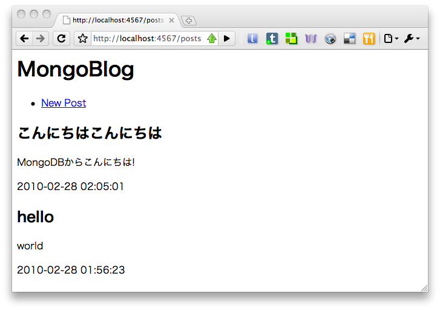

10gen社が中心となって開発している非リレーショナルデータベース。
MongoDBは("humongous"より)は、スケーラブル、ハイパフォーマンス、オープンソース、スキーマフリー、ドキュメント指向です。C++で書かれていて、機能としては:
- ドキュメント指向ストレージ (the simplicity and power of JSON-like data schemas)
- 動的な クエリー
- 組み込みのオブジェクトと配列をサポートした完全な Index のサポート。
- クエリー プロファイリング
- 速い in-place アップデート
- バイナリデータの効率的な保存 large objects (例：写真や動画)
- レプリケーション とフェイルオーバーのサポート。
- クラウドレベルのスケーラビリティな 自動的なsharding
- 複雑な集約のための MapReduce
- 商用サポート、ホスティング、コンサルティング
リレーショナルデータベースと比較して:
一般的なKVS (memcachedなど) と比較して:
→KVSの速度・スケーラビリティと、リレーショナルデータベースの機能性を併せ持つらしい
Production Deployments - MongoDB - 10gen Confluence
→結構色んなところで使われているらしい
Downloads - MongoDB - 10gen Confluence から、環境に合ったバイナリをダウンロードしてください。
$ gem install mongo
何はともあれMongoDBを起動します。
$ tar xvf mongodb-osx-x86_64-1.2.3.tgz.tar
$ cd mongodb-osx-x86_64-1.2.3
$ mkdir ~/tmp/mongodb
$ bin/mongod --dbpath ~/tmp/mongodb
別のターミナルでmongo shellを起動します。
$ cd mongodb-osx-x86_64-1.2.3
$ bin/mongo
基本は mongo-ruby-driver 。mongo shellレベルのバインディング。
O/RマッパーならぬObject/Documentマッパーも複数存在する。

使うもの:
$ gem install mongo_mapper sinatra haml shotgun
blog.rbという名前でファイルを作ります。
require 'rubygems' require 'mongo_mapper' MongoMapper.database = 'blog' class Post include MongoMapper::Document key :title, String, :required => true key :body, String, :required => true timestamps! #=> created_at, updated_at ensure_index :created_at end
See: MongoMapper, The Rad Mongo Wrapper
$ irb -rblog
>> Post.create!(:title => 'hello', :body => 'world')
=> #<Post created_at: Sun Feb 28 01:56:23 UTC 2010, body: "world", title: "hello", updated_at: Sun Feb 28 01:56:23 UTC 2010, _id: 4b89cd470e962b03f3000001>
>> Post.create!
MongoMapper::DocumentNotValid: Validation failed: Body can't be empty, Title can't be empty
from /Gentoo/usr/lib/ruby/gems/1.8/gems/mongo_mapper-0.7.0/lib/mongo_mapper/document.rb:369:in `save!'
...
>> Post.create!(:title => 'こんにちはこんにちは', :body => 'MongoDBからこんにちは!')
=> #<Post created_at: Sun Feb 28 02:05:01 UTC 2010, body: "MongoDB\343\201\213\343\202\211\343\201\223\343\202\223\343\201\253\343\201\241\343\201\257!", title: "\343\201\223\343\202\223\343\201\253\343\201\241\343\201\257\343\201\223\343\202\223\343\201\253\343\201\241\343\201\257", updated_at: Sun Feb 28 02:05:01 UTC 2010, _id: 4b89cf4d0e962b03f3000003>
>> Post.first => #<Post created_at: Sun Feb 28 01:56:23 UTC 2010, body: "world", title: "hello", updated_at: Sun Feb 28 01:56:23 UTC 2010, _id: 4b89cd470e962b03f3000001> >> Post.first(:title => 'hello') => #<Post created_at: Sun Feb 28 01:56:23 UTC 2010, body: "world", title: "hello", updated_at: Sun Feb 28 01:56:23 UTC 2010, _id: 4b89cd470e962b03f3000001> >> Post.all(:body => /mongodb/i) => [#<Post created_at: Sun Feb 28 02:05:01 UTC 2010, body: "MongoDB\343\201\213\343\202\211\343\201\223\343\202\223\343\201\253\343\201\241\343\201\257!", title: "\343\201\223\343\202\223\343\201\253\343\201\241\343\201\257\343\201\223\343\202\223\343\201\253\343\201\241\343\201\257", updated_at: Sun Feb 28 02:05:01 UTC 2010, _id: 4b89cf4d0e962b03f3000003>]
blog.rb (つづき):
require 'sinatra' require 'haml' set :haml, :escape_html => true get '/posts' do @posts = Post.all(:order => 'created_at DESC') haml :posts end
views/posts.haml:
%h1 MongoBlog
%p
%a(href='/posts/new') New Post
- @posts.each do |post|
.post
%h2= post.title
%p= post.body
%p.created_at= post.created_at.to_s(:db)
アプリケーションを起動して…
$ shotgun blog.rb
blog.rb:
get '/posts/new' do
@post = Post.new
haml :new
end
post '/posts' do
@post = Post.new(params[:post])
if @post.save
redirect '/posts'
else
haml :new
end
end
views/new.haml:
%ul.errors
- @post.errors.full_messages.each do |e|
%li= e
%form.post(action='/posts' method='post')
%dl
%dt Title
%dd
%input(name='post[title]' type='text'){:value => @post.title}
%dt Body
%dd
%textarea(name='post[body]')!= @post.body
.actions
%input(type='submit' value='Post')
ご参加いただいた皆さま、ありがとうございました!